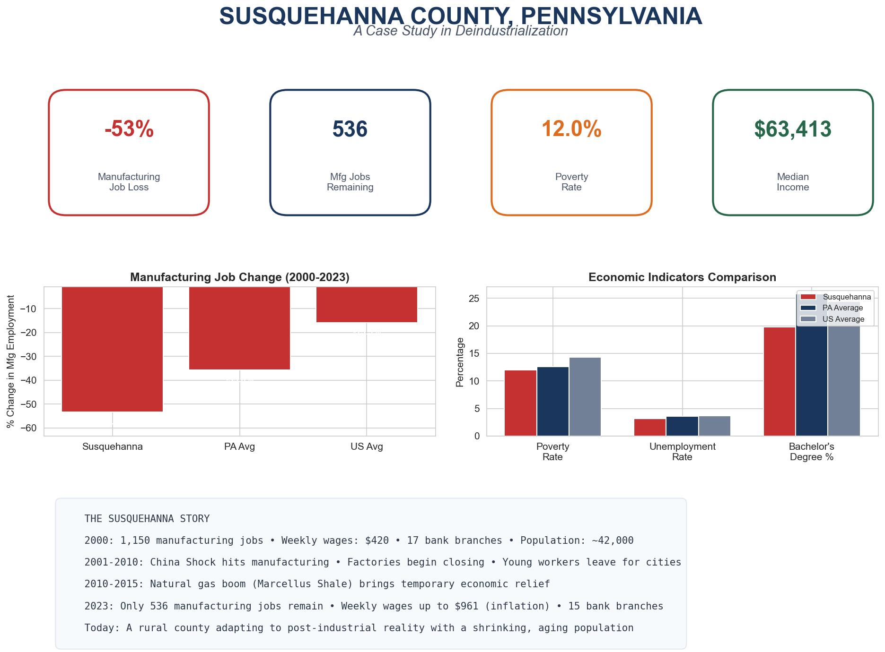

The Story of Susquehanna County
Once home to 3,000 Erie Railway workers and a thriving coal industry, Susquehanna County has experienced one of Pennsylvania's most dramatic declines. Manufacturing jobs fell 53%, population dropped 11.4% (worst in PA), and school enrollment is down 30%. Even a natural gas boom couldn't reverse the trajectory.
